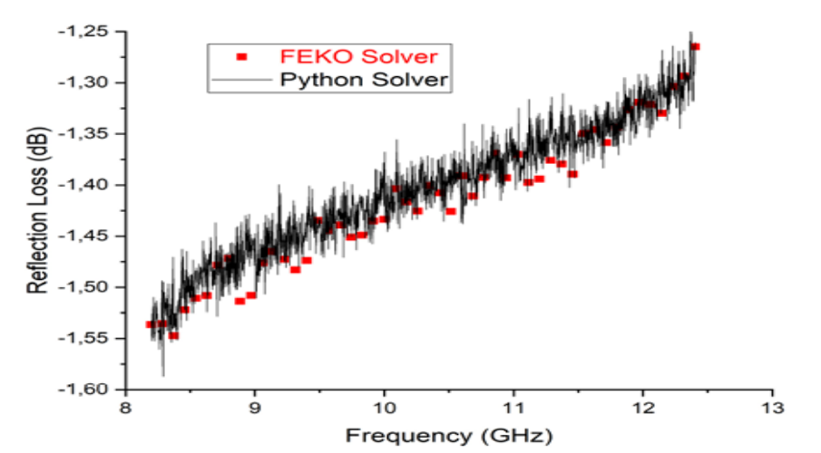
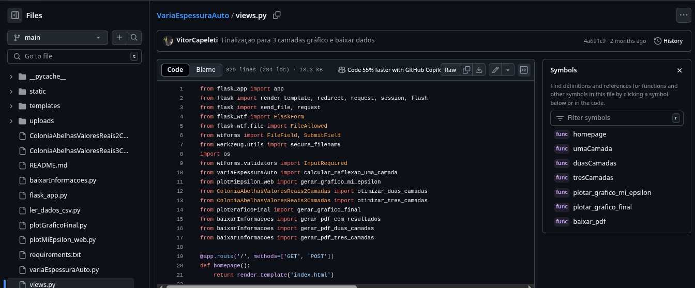

Finalidade do Projeto

A aplicação aceita arquivos .csv com dados de permissividade (ε) e permeabilidade (μ), realiza simulações com diferentes algoritmos e apresenta os resultados de forma visual, intuitiva e com opção de exportação em PDF. A confirmação dos resultados foi feito com o software comercial FEKO(Fig 2).
Tecnologias Utilizadas

Python 3.x; Flask (web framework); NumPy (operações numéricas); Matplotlib (geração de gráficos); ReportLab (geração de PDF); HTML5 + CSS3 (interface); Base64 (visualização inline de imagens); Algoritmo da Colônia de Abelhas (ABC).
Considerações Finais

Com o resultado do projeto, notei meu amadurecimento como programador, analista e desenvolvedor. Esse projeto foi um pacote completo de aplicabilidade de conceitos, como algoritmos, otimização, gestão de projetos e entre outros. Esse projeto, trouxe também, meu autodesenvolvimento na linguagem Python, onde superei diversos desafios durante minha trajetória.